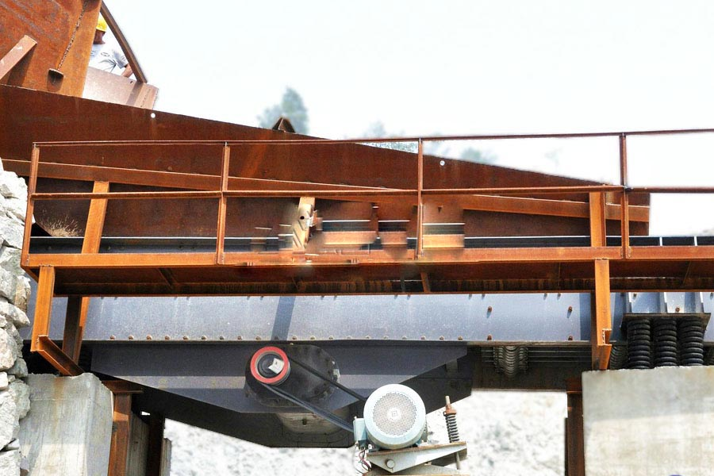

- Home >
- feeding screening >
- Vibrating Screen Problems Solutions

Construction waste crushing production line

Mobile construction waste crushing station for urban construction waste crushing.
Vibrating Screen Problems Solutions
Vibrating Screen Problems Solutions Products
Vibrating Screen Problems Solutions is developed and produced by the company a general vibration motor feeder equipment. Widely used in mining, metallurgy, coal, glass, building materials, light industry, chemical industry, electricity, food and other industries. Simple device itself has a structure, large capacity, low noise, low energy consumption. The series can also be used feeder electric gate, or without chute gate.
Vibration feeder product performance
1. Simple structure, light weight, low noise, reliable, feeding capacity, easy installation and maintenance.
2. The use of special vibration motor self-synchronization principle, start fast, stable, smooth parking.
3. Press the parabolic trajectory of continuous material for jumping forward movement, and therefore less wear to the trough.
4. Because you can instantaneously change and hoisting stream, so to have a higher precision quantity.
5. This series of vibrating feeder is not suitable for explosion-proof occasions.
Vibrating feeder technical parameters
| Model |
The maximum feed size (mm) |
Processing capacity (t/h) |
Motor Power (kw) |
Installation angle ( °) |
weight (kg) |
Tank size (mm) |
Dimensions (L×W×H) (mm) |
| GZD-650×2300 | 300 | 80 | 1.1×2 | 10 | 2798 | 650×2300 | 2300×1360×780 |
| GZD-750×2500 | 350 | 100 | 1.1×2 | 10 | 3260 | 750×2500 | 2500×1460×780 |
| GZD-850×3000 | 400 | 120 | 3×2 | 10 | 3607 | 850×3000 | 3110×1800×1600 |
| GZD-1000×3600 | 500 | 150 | 5.5×2 | 5 | 3895 | 1000×3600 | 3850×1950×1630 |
| GZD-1100×4200 | 580 | 240 | 5.5×2 | 5 | 4170 | 1100×4200 | 4400×2050×1660 |
| GZD-1300×4900 | 650 | 450 | 7.5×2 | 5 | 5200 | 1300×4900 | 5200×2350×1750 |
| GZD-1500×5600 | 1050 | 450-800 | 11×2 | 5 | 7500 | 1500×5600 | 5700×2000×1750 |
| ZSW-380×95 | 500 | 100-160 | 11 | 0 | 4823 | 3800×960 | 3920×1640×1320 |
| ZSW-490×110 | 630 | 150-320 | 15 | 0 | 6647 | 4900×1100 | 4980×1830×1320 |
| ZSW-490×130 | 750 | 400-600 | 22 | 0 | 8760 | 4900×1300 | 4980×2580×2083 |
| ZSW-600×130 | 750 | 400-600 | 22 | 0 | 9250 | 6000×1300 | 6082×2580×2083 |
| ZSW-600×150 | 800 | 500-700 | 30 | 0 | 10190 | 6000×1500 | 6086×2662×1912 |
| ZSW-600×180 | 800 | 700-1000 | 37 | 0 | 13750 | 6000×1800 | 6310×3262×2230 |

Vibrating Feeder Works
Feeder feeding process is the use of a special vibration exciter driven by two electric motors or motor driven oblique direction to the trough for periodic reciprocating vibration is achieved when the trough to the vertical component of the vibration acceleration is greater than the acceleration due to gravity, tank material is thrown, and in accordance with the parabolic trajectory jump forward motion, toss and fall instantaneously, due to continuous excitation excitation source, to continuous vibration trough, tank coal continuous jump forward, in order to achieve the purpose of feeding.
Leave Me A Message, Now
If you have any questions regarding equipment prices, production line configuration or other problems, you can send a message to us, we will contact you soon.